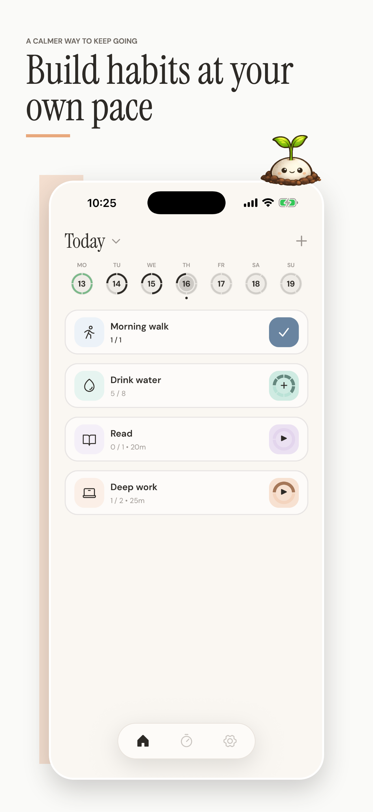
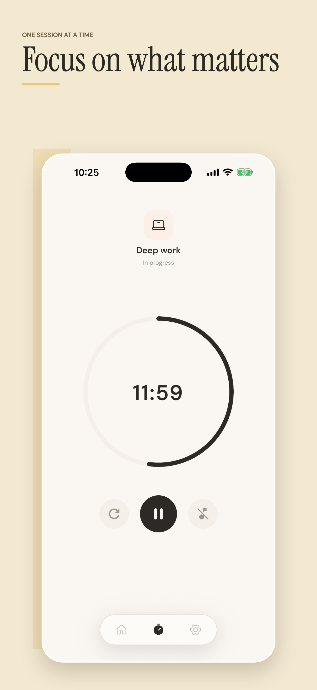
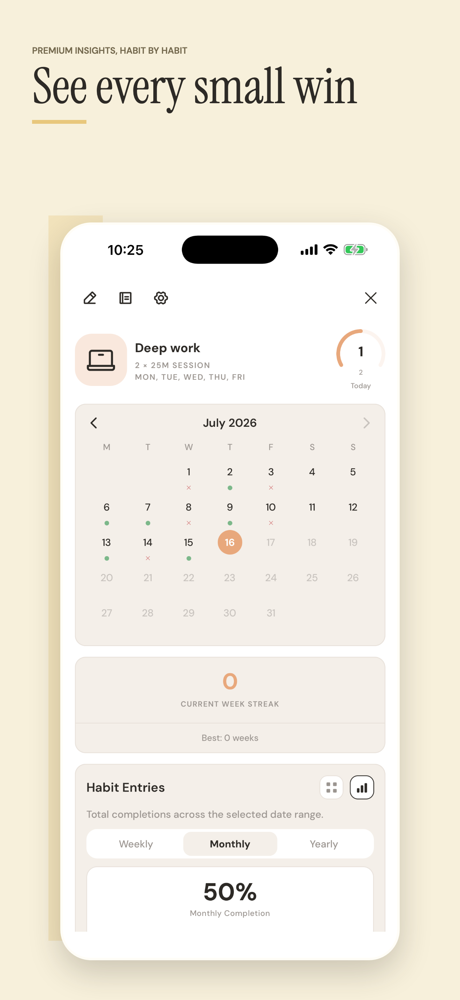

Daily habits
Track check-offs, counts, timed sessions, reminders, and custom routines from one focused home screen.
Habit tracker for iOS
Build routines, focus with timers, and see your progress without turning habit tracking into another task.


Track check-offs, counts, timed sessions, reminders, and custom routines from one focused home screen.
Start timers for deep work and see active sessions through iOS Live Activities and home-screen widgets.
Review streaks, heatmaps, completion charts, and time-of-day patterns as your habit history grows.
Statistics
Tempo keeps long-term progress readable with weekly, monthly, and yearly views, while keeping the app calm enough to use every day.
